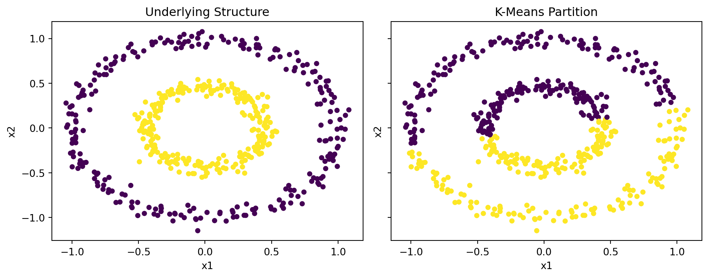
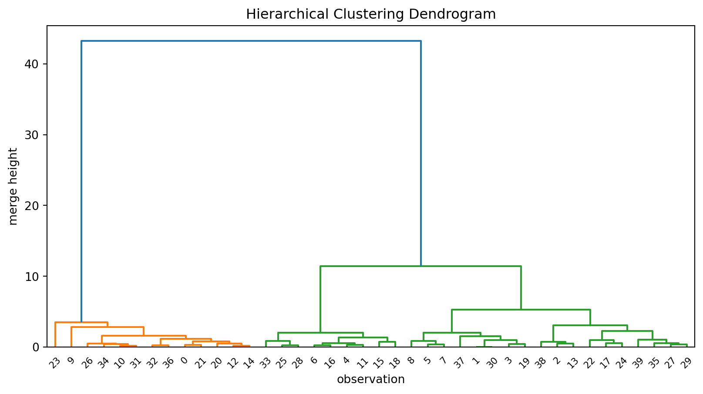
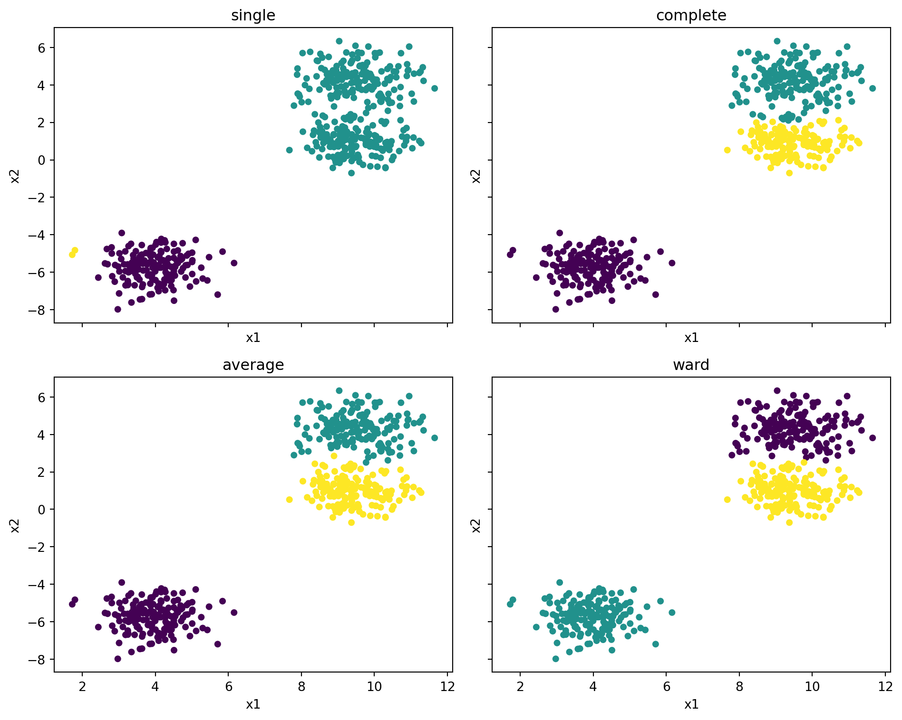

from sklearn.datasets import make_blobs
X, true_group = make_blobs(
n_samples=500,
n_features=2,
centers=3,
cluster_std=[0.7, 0.9, 0.8],
random_state=4,
)12 Clustering
Clustering is an unsupervised learning problem. We observe only a predictor matrix
\[ X= \mqty[ x_1^\top\\ \vdots\\ x_n^\top ] \in\mathbb R^{n\times p}, \]
and try to divide the observations into groups whose members are similar. Unlike classification, there are no training labels that define the correct groups.
Clustering is commonly used to:
- explore unknown subpopulations;
- summarize a large dataset with a small number of groups or prototypes;
- organize observations for visualization;
- generate hypotheses for later scientific analysis.
CautionA cluster is not automatically a real class
A clustering algorithm returns a partition when asked to do so. The result may reflect scientific structure, but it may also reflect scaling, outliers, an unsuitable distance, or a forced choice of the number of clusters. Interpretation is part of the analysis.
12.1 Distance and Scaling
Most clustering methods begin with a notion of dissimilarity. For numerical features, the default is often Euclidean distance:
\[ d(x_i,x_j) = \norm{x_i-x_j}_2 = \sqrt{\sum_{\ell=1}^p(x_{i\ell}-x_{j\ell})^2}. \]
The distance defines what the algorithm means by similar. Changing the features, their scales, or the distance metric changes the clustering problem. In particular, features with larger numerical ranges can dominate Euclidean distance.
Therefore, as with KNN and other distance-based methods, it is often necessary to standardize the features before clustering.
NoteScaling is a modeling decision
Standardize when numerical scales are arbitrary or incomparable. Do not standardize automatically when the original magnitude is scientifically meaningful, such as comparable pixel intensities or measurements already expressed on a common scale.
Euclidean distance is not the only choice. Manhattan distance can be less sensitive to a few large coordinate differences, cosine distance focuses on direction rather than magnitude, and domain-specific data may require a custom dissimilarity. The distance should match the question being asked.
12.2 K-Means Clustering
K-means represents each cluster by its center. Let \(C_1,\ldots,C_K\) be a partition of the observations, and let
\[ \mu_k = \frac{1}{|C_k|} \sum_{i\in C_k}x_i \]
be the center of cluster \(k\).
Definition 12.1 (K-means objective) K-means chooses the partition that minimizes the within-cluster sum of squares (WCSS):
\[ \operatorname{WCSS} = \sum_{k=1}^K \sum_{i\in C_k} \norm{x_i-\mu_k}_2^2. \]
In sklearn, this objective is called inertia.
The standard algorithm alternates between two steps:
- assign each observation to its nearest center;
- replace each center by the mean of its assigned observations.
Each step decreases, or leaves unchanged, the K-means objective. The algorithm eventually reaches a local optimum, but not necessarily the global optimum. For this reason, software usually tries several random initializations.
12.2.1 A Simulated Example
We use make_blobs from sklearn.datasets to generate 500 observations from three clusters. The data have two features so that the result can be visualized directly.
The colors below show the generating groups. They are not used when fitting K-means.
import matplotlib.pyplot as plt
plt.scatter(X[:, 0], X[:, 1], c=true_group)
plt.xlabel("x1")
plt.ylabel("x2")
plt.title("Simulated Groups");
KMeans follows the usual sklearn interface. Since clustering is performed on the observed data themselves, .fit_predict() fits the model and returns the cluster assignments for the observations.
The argument n_init=20 runs K-means from 20 initial center configurations and retains the result with the smallest inertia.
from sklearn.cluster import KMeans
kmeans = KMeans(
n_clusters=3,
n_init=20,
random_state=1,
)
cluster = kmeans.fit_predict(X)
plt.scatter(X[:, 0], X[:, 1], c=cluster)
plt.scatter(
kmeans.cluster_centers_[:, 0],
kmeans.cluster_centers_[:, 1],
marker="X",
color="black",
label="centers",
)
plt.xlabel("x1")
plt.ylabel("x2")
plt.title("K-Means Clustering")
plt.legend();
The fitted centers are available from the model.
kmeans.cluster_centers_array([[ 9.45999811, 1.0020861 ],
[ 3.95212561, -5.72057393],
[ 9.54129566, 4.35377553]])
NoteLabel switching
Cluster labels are arbitrary. A cluster labeled 0 in one fit may be labeled 2 in another fit even when the two partitions are identical. Interpret the groups through their members and feature summaries, not the numeric label.
12.2.2 When K-Means Works Well
Because K-means uses squared Euclidean distance to a center, it is most effective when clusters are:
- compact and approximately spherical;
- separated by their centers;
- reasonably similar in size and spread;
- not dominated by extreme outliers.
It can perform poorly on curved clusters, clusters with very different densities, or data where a mean is not an appropriate prototype.
Code
from sklearn.datasets import make_circles
X_circle, true_circle_group = make_circles(
n_samples=500,
factor=0.45,
noise=0.05,
random_state=1,
)
circle_kmeans = KMeans(
n_clusters=2,
n_init=20,
random_state=1,
)
circle_cluster = circle_kmeans.fit_predict(X_circle)
fig, axs = plt.subplots(
1,
2,
figsize=(10, 4),
sharex=True,
sharey=True,
)
axs[0].scatter(
X_circle[:, 0],
X_circle[:, 1],
c=true_circle_group,
s=18,
)
axs[0].set_title("Underlying Structure")
axs[1].scatter(
X_circle[:, 0],
X_circle[:, 1],
c=circle_cluster,
s=18,
)
axs[1].set_title("K-Means Partition")
for ax in axs:
ax.set_xlabel("x1")
ax.set_ylabel("x2")
plt.tight_layout();
K-means divides the feature space into convex regions, so it cannot recover the two rings. A graph-based method such as spectral clustering is more appropriate for this type of connectivity structure.
12.3 Evaluating a Clustering
Without known labels, clustering evaluation must combine several kinds of evidence. Internal metrics assess geometric compactness and separation, stability checks whether the result persists under perturbations, and interpretation determines whether the groups are meaningful in the original problem.
12.3.1 Internal Evaluation
Internal clustering metrics use only the observations and their assigned clusters. They can compare values of \(K\) or different initializations of the same method. Comparisons between methods are meaningful only when the same observations, features, scaling, and distance are used.
No single metric defines the correct clustering. Each metric favors a particular geometric idea of a good partition. We focus on two common metrics: WCSS and the silhouette score.
12.3.1.1 Within-Cluster Sum of Squares
For K-means, WCSS is both the fitting objective and an internal measure of cluster compactness:
\[ \operatorname{WCSS} = \sum_{k=1}^K \sum_{i\in C_k} \norm{x_i-\mu_k}_2^2. \]
For a fitted KMeans object, WCSS is stored in inertia_.
kmeans.inertia_569.9430376800667Smaller inertia means observations are closer to their assigned centers. However, inertia always decreases as \(K\) increases and becomes zero when every distinct observation is its own cluster. Therefore, its absolute minimum cannot be used to choose \(K\).
12.3.1.2 Silhouette Value
The silhouette value evaluates both within-cluster cohesion and separation from neighboring clusters. For observation \(i\), define:
- \(a(i)\) as its average distance to other observations in its own cluster;
- \(b(i)\) as the smallest average distance to observations in another cluster.
The silhouette value is
\[ s(i) = \frac{b(i)-a(i)} {\max\{a(i),b(i)\}}. \]
It lies between \(-1\) and \(1\):
- values near \(1\) indicate a well-separated observation;
- values near \(0\) indicate an observation near a cluster boundary;
- negative values suggest that another cluster may be closer.
The overall silhouette score is the average of \(s(i)\) over all observations. Larger values are preferred. It requires at least two nonempty clusters.
12.3.2 Choosing the Number of Clusters
The number of clusters \(K\) is a tuning parameter. There is no universally correct criterion because the useful level of grouping depends on the scientific question.
The elbow plot examines inertia over a range that includes \(K=1\). The silhouette score is computed only for \(K\ge 2\).
from sklearn.metrics import silhouette_score
inertia_k = range(1, 11)
inertias = []
for k in inertia_k:
model = KMeans(
n_clusters=k,
n_init=20,
random_state=1,
)
model.fit(X)
inertias.append(model.inertia_)
silhouette_k = range(2, 11)
silhouettes = []
for k in silhouette_k:
model = KMeans(
n_clusters=k,
n_init=20,
random_state=1,
)
labels = model.fit_predict(X)
silhouettes.append(
silhouette_score(X, labels)
)Plot the two diagnostics together.
fig, axs = plt.subplots(1, 2, figsize=(11, 4))
axs[0].plot(inertia_k, inertias, marker="o")
axs[0].set_xlabel("number of clusters K")
axs[0].set_ylabel("inertia")
axs[0].set_title("Elbow Plot")
axs[1].plot(silhouette_k, silhouettes, marker="o")
axs[1].set_xlabel("number of clusters K")
axs[1].set_ylabel("average silhouette")
axs[1].set_title("Silhouette Score")
plt.tight_layout();
For inertia, the elbow heuristic looks for the point after which additional clusters produce only modest improvement. For the silhouette score, larger values are preferred. The two diagnostics can disagree because they measure different aspects of the partition.
CautionDiagnostics do not define the scientific answer
These metrics evaluate geometric compactness and separation under the chosen features, scaling, and distance. They do not show that the clusters are stable, scientifically meaningful, or useful for a later decision.
12.3.3 Stability
A useful clustering should not change completely after a small perturbation. A practical stability analysis can:
- resample observations or features;
- repeat preprocessing and clustering;
- compare which pairs of observations are repeatedly grouped together;
- inspect clusters that split or disappear.
Instability may indicate weak separation, an unsuitable tuning choice, or insufficient data. It can also reveal that several clusterings are similarly plausible.
12.3.4 External Evaluation
When known labels are available, they may be used after clustering for evaluation. The adjusted Rand index (ARI) compares two partitions while accounting for agreement expected by chance. It equals \(1\) for identical partitions and has expected value near \(0\) for independent random partitions.
from sklearn.metrics import adjusted_rand_score
adjusted_rand_score(true_group, cluster)0.9702725900485715This does not turn clustering into supervised learning because the labels were not used to fit the clusters.
12.3.5 Interpretation in the Original Features
An embedding plot is useful, but clusters should ultimately be described using the original variables.
import pandas as pd
cluster_summary = (
pd.DataFrame(X, columns=["x1", "x2"])
.assign(cluster=cluster)
.groupby("cluster")
.agg(["mean", "std", "size"])
)
cluster_summary| x1 | x2 | |||||
|---|---|---|---|---|---|---|
| mean | std | size | mean | std | size | |
| cluster | ||||||
| 0 | 9.459998 | 0.709442 | 170 | 1.002086 | 0.689104 | 170 |
| 1 | 3.952126 | 0.723675 | 166 | -5.720574 | 0.777322 | 166 |
| 2 | 9.541296 | 0.835150 | 164 | 4.353776 | 0.801969 | 164 |
For real data, combine such summaries with domain knowledge and representative observations from each group.
12.4 Hierarchical Clustering
Hierarchical clustering builds a nested sequence of partitions. Agglomerative hierarchical clustering begins with each observation in its own cluster and repeatedly merges the two closest clusters until all observations belong to one cluster.
The result is a tree called a dendrogram. Unlike K-means, the hierarchy can be fit before choosing the final number of clusters.
12.4.1 Linkage
The distance between individual observations is not enough; the algorithm also needs a distance between groups. For two clusters \(G\) and \(H\):
Single linkage uses the closest pair:
\[ d_{\text{single}}(G,H) = \min_{i\in G,\;j\in H} d(x_i,x_j). \]
Complete linkage uses the farthest pair:
\[ d_{\text{complete}}(G,H) = \max_{i\in G,\;j\in H} d(x_i,x_j). \]
Average linkage uses the average pairwise distance:
\[ d_{\text{average}}(G,H) = \frac{1}{|G||H|} \sum_{i\in G} \sum_{j\in H} d(x_i,x_j). \]
Ward linkage merges the pair that produces the smallest increase in within-cluster sum of squares. Ward linkage is based on Euclidean geometry and tends to produce compact clusters.
Different linkage rules express different ideas of what makes two groups close. Single linkage can identify elongated connected groups but is sensitive to chains of intermediate points. Complete and Ward linkage tend to produce more compact groups.
12.4.2 Dendrogram
from scipy.cluster.hierarchy import (
linkage,
dendrogram,
fcluster,
)
X_small = X[:40]
Z = linkage(
X_small,
method="ward",
metric="euclidean",
)
plt.figure(figsize=(10, 5))
dendrogram(Z)
plt.xlabel("observation")
plt.ylabel("merge height")
plt.title("Hierarchical Clustering Dendrogram");
The merge height records the dissimilarity at which two branches are joined. A horizontal cut through the tree produces a partition.
hierarchical_cluster = fcluster(
Z,
t=3,
criterion="maxclust",
)
hierarchical_clusterarray([1, 3, 3, 3, 2, 3, 2, 3, 3, 1, 1, 2, 1, 3, 1, 2, 2, 3, 2, 3, 1, 1,
3, 1, 3, 2, 1, 3, 2, 3, 3, 1, 1, 2, 1, 3, 1, 3, 3, 3], dtype=int32)The dendrogram describes the fitted hierarchy, not uncertainty about the hierarchy. A large vertical gap can suggest a useful cut, but it is still a heuristic.
12.4.3 Comparing Linkages
from sklearn.cluster import AgglomerativeClustering
methods = ["single", "complete", "average", "ward"]
fig, axs = plt.subplots(
2,
2,
figsize=(10, 8),
sharex=True,
sharey=True,
)
for ax, method in zip(axs.ravel(), methods):
model = AgglomerativeClustering(
n_clusters=3,
linkage=method,
metric="euclidean",
)
labels = model.fit_predict(X)
ax.scatter(
X[:, 0],
X[:, 1],
c=labels,
s=18,
)
ax.set_title(method)
ax.set_xlabel("x1")
ax.set_ylabel("x2")
plt.tight_layout();
Hierarchical clustering is especially useful when the nesting itself is interesting, such as organizing genes, documents, or related products. However, early agglomerative merges cannot be undone, so a poor early merge affects the rest of the tree.
12.5 Practical Workflow
A clustering analysis usually follows these steps:
- select features that match the scientific question;
- handle missing values and obvious data quality problems;
- choose scaling and a distance metric deliberately;
- visualize the data, possibly after dimension reduction;
- compare clustering methods and tuning choices;
- check stability under perturbations;
- interpret the groups in the original feature space.
PCA and other dimension-reduction methods are discussed in Chapter 13 and Chapter 14. They can reveal structure and reduce noise, but they also change the geometry on which clustering is based.
12.6 Summary
K-means minimizes within-cluster squared distance and works best for compact, center-separated groups. Internal metrics such as inertia and silhouette score help compare candidate partitions, but they must be combined with stability and interpretation. Hierarchical clustering builds a dendrogram whose structure depends on both the observation distance and the linkage rule.